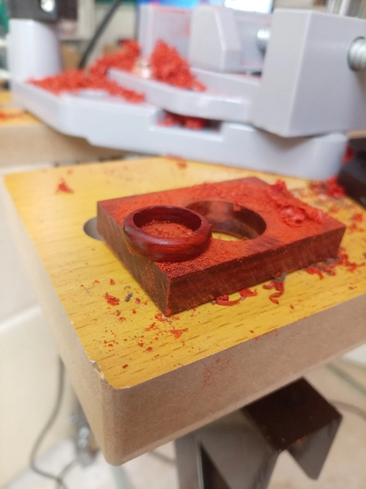

Bague en bois
Santal rose
Un anneau en bois de santal rose, large et arrondi. De fines lignes sombres suivent la courbe du bois jusque sur la face intérieure.
39 €
Envoi suivi inclus en France. Pour une autre destination, consultez les frais de port dans le catalogue ou écrivez à Ahmed.
- Pièce
- L’exemplaire photographié